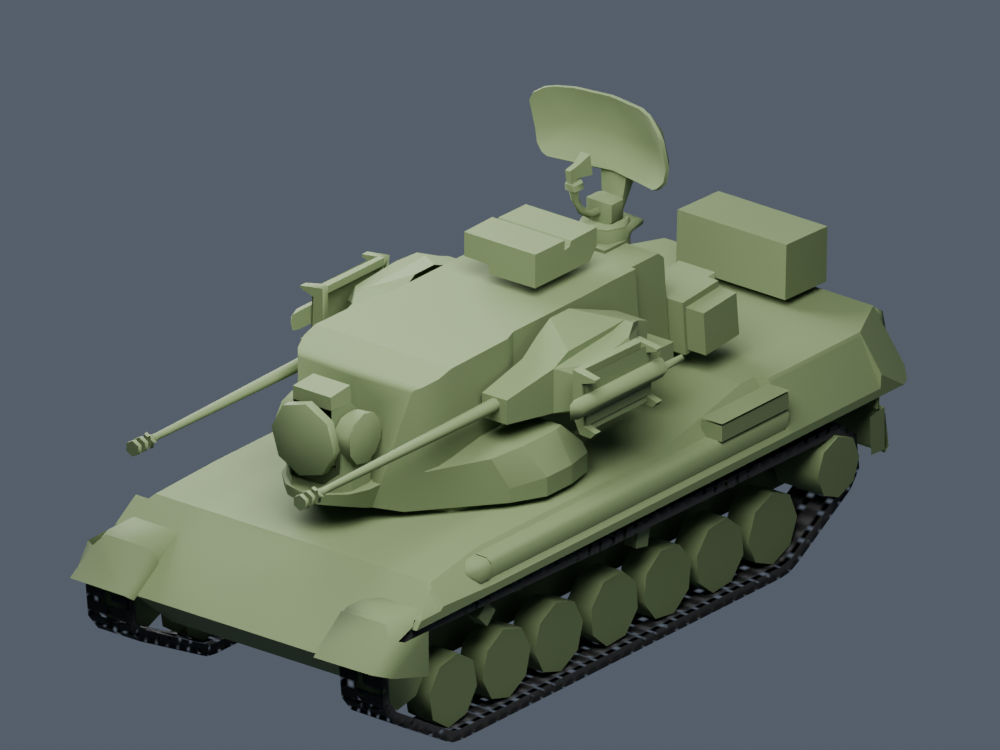
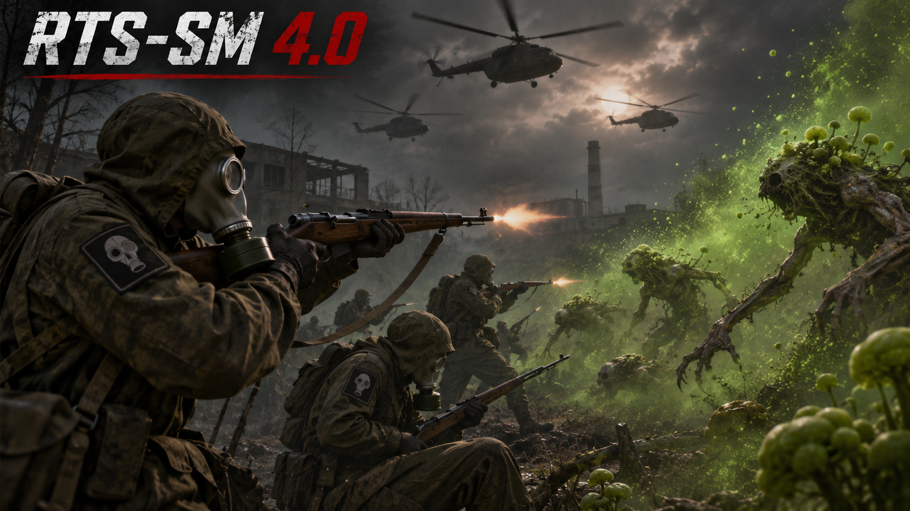
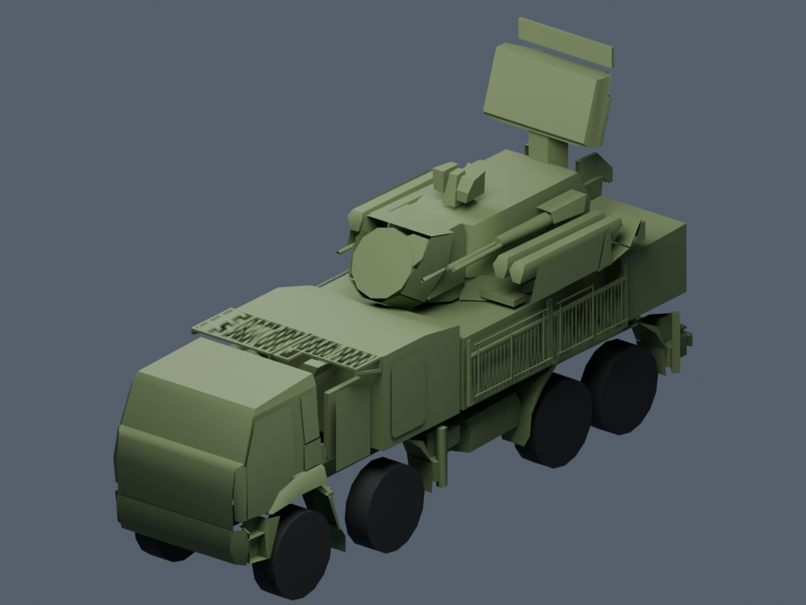
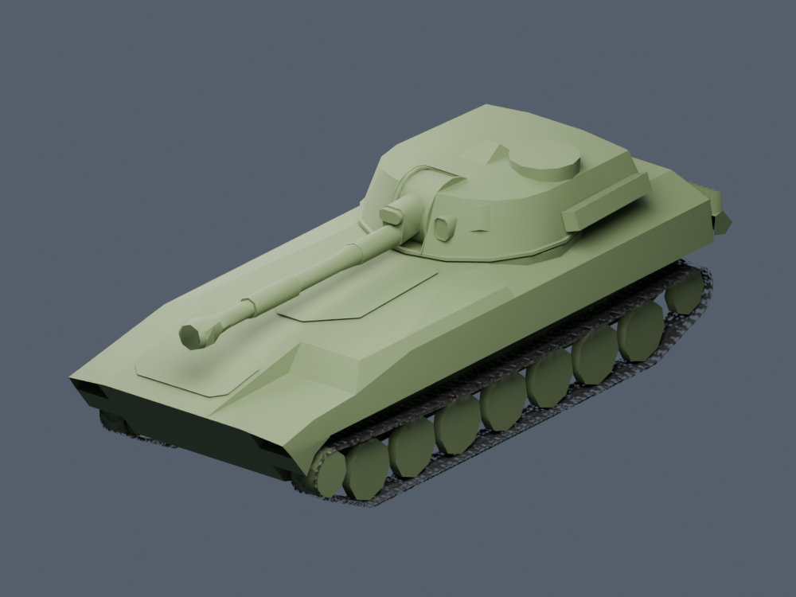

СМГРАД / ЗСУГепард 1А2
Пушка очередями вблизи, управляемые ракеты на дальней дистанции. Башня наводится на цель.
ПУШКА / РАКЕТЫ38 / 65 м

01 / ПОЛЕ БОЯ
Построй базу, наладь добычу и управляй войсками на земле, в воздухе и на море.
СМГрад, Гнильбург и ZГрад предлагают собственный облик армии. Выбери карту, погоду и время суток, сражайся с ботами или другим командиром по локальной сети.
02 / ОБНОВЛЕНИЕ АРСЕНАЛА
Новые ЗСУ, самоходная артиллерия
и обновлённая авиация.

СМГРАД / ЗСУПушка очередями вблизи, управляемые ракеты на дальней дистанции. Башня наводится на цель.

ZГРАД / ЗСУМобильная защита от авиации с возможностью вести огонь по наземным целям.

СМГРАД И ZГРАД / САУВыбери площадь артудара, прикрой артиллерию и подави оборону противника издалека.
Гнильбург получает АДАТС, M109 и боевой вертолёт с зелёными спорами. Камуфляж новой техники меняется вместе с ландшафтом.
03 / РЕАЛИЗМ-СМ
ОБТ и Т-55 доступны всем фракциям. Добыча ресурсов, туман войны и единая основа бронетанковых сил — отдельный третий режим.
КлассикаАрмия без ресурсных ограничений.
РеализмЭкономика, добыча и туман войны.
Реализм-СМРесурсы и общий набор ОБТ / Т-55.
04 / СВЯЗЬ СО ШТАБОМ
В меню игры появилась кнопка «Обновление игры».
Она проверяет GitHub Releases, скачивает новую версию и сверяет контрольную сумму. После подтверждения игра закроется, установит обновление и запустится снова.
Все версии и файлы ↗